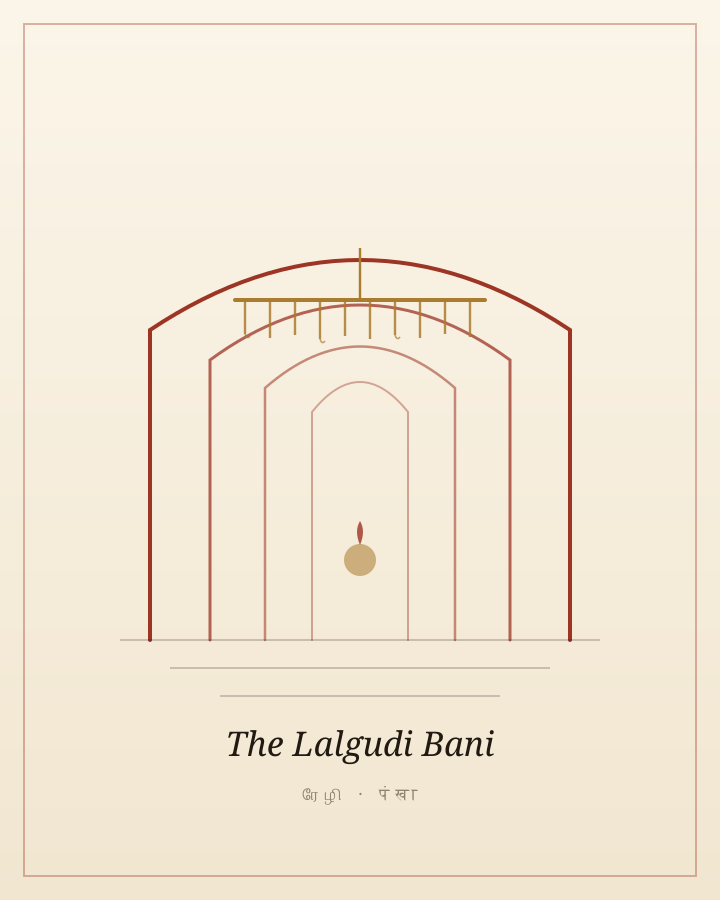

MusicJuly 2026
The Lalgudi Bani
On Smt. Lalgudi Vijayalakshmi, The Incurable Romantic, and what a family of archivists taught me about memory, lineage, and documentation — beginning with my own grandfather's biography.
Read the essay
A journal of notes & criticism
Notes and criticism from Achi Bala: music, movies, and the craft behind the things we love.
MusicJuly 2026
On Smt. Lalgudi Vijayalakshmi, The Incurable Romantic, and what a family of archivists taught me about memory, lineage, and documentation — beginning with my own grandfather's biography.
Read the essay
AnnouncementsJuly 2025
Seven iconic Tamil songs. Six soundscapes. One Viennese waltz, eighteen months in the making. The announcement essay for the short film.
MoviesArchive
On Endgame, Thanos as a study in escalation, and why the intricate planning behind the Marvel Cinematic Universe rewards the analytical viewer. Spoilers, naturally.